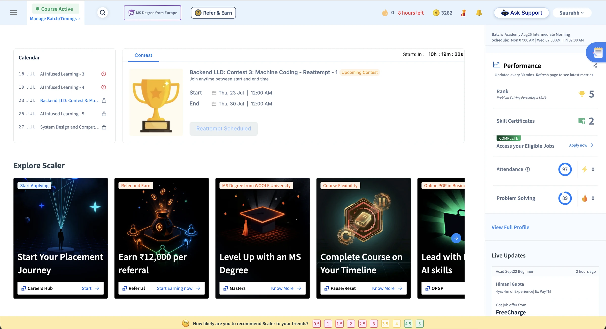
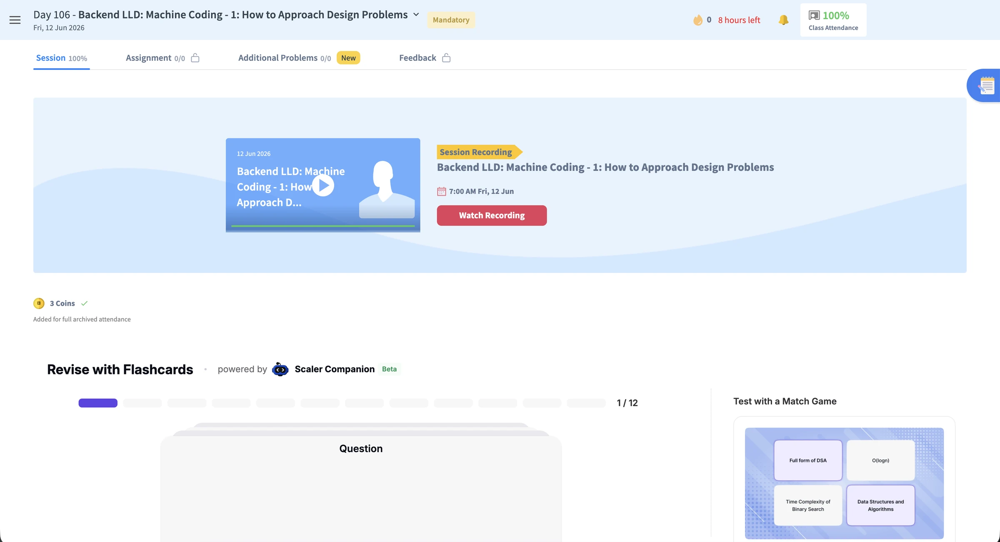
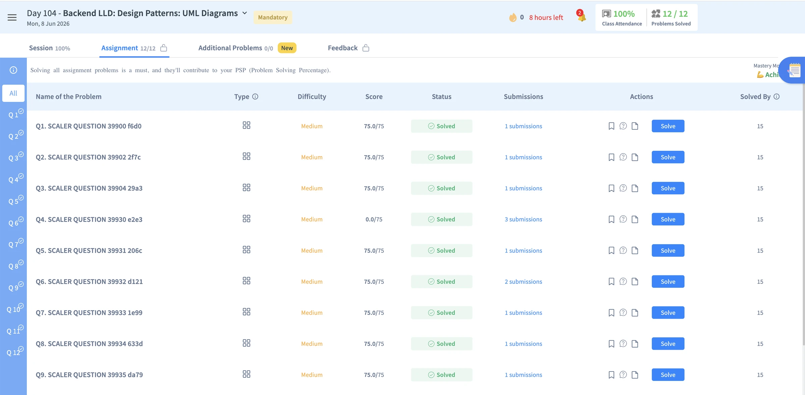
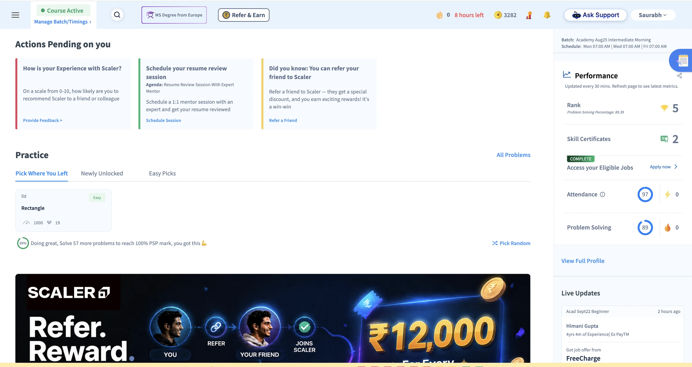

The product had no coherent surface for a personalised roadmap, recommendation rationale, adaptive enrichment, or a continuous Companion experience.
Scaler AI LMS · Product Design
Rebuilding the learning platform to match an AI-native curriculum — one surface at a time.
A redesign of Scaler's three core learning surfaces — the Path-maker home, Inside Class, and Problem Solving — to align the product experience with an AI-native curriculum. While the curriculum had become personalised, adaptive, and Companion-led, the interface remained organised around static widgets and standardised course flows.

The product experience no longer reflected the curriculum.
Calendar events, contests, and practice activities appeared as separate modules, with no system-level prioritisation or sequence.
Locks, pending statuses, PSP percentages, and leaderboards show learners what remains incomplete, but not what to prioritise next or why it matters.
Where it appears
The same mismatch surfaced at every step of learning.
Home dashboard
The dashboard combines calendar items, contests, pending actions, practice activities, marketing promotions, performance metrics, and live updates within one long surface. These modules operate independently and carry similar visual priority, requiring learners to scan across the page to identify current commitments, unfinished work, and the next activity.
The experience does not distinguish required cohort work from optional or recommended learning. It also does not explain why an activity matters, how it connects to the learner's goals, or how the plan should change based on progress. As a result, the home functions as a portal to separate features rather than a personalised roadmap for what to do now, next, and later.

Inside Class
A class is divided across separate tabs for recordings, assignments, additional problems, feedback, flashcards, and revision games. The screen provides little context about what the class covers, how it connects to the module, or how learners should prepare. There are no pre-reads or preparation activities before the class begins, and the experience does not form a connected prepare → attend → practise → revise journey.

Problem Solving
Learners receive a problem statement and a code editor, but little guidance on how to interpret, break down, or approach the problem. There are no relevant references, worked examples, or progressive hints to help them move from understanding the problem to building a solution. The learning journey needs clearer steps so learners can understand the approach and begin solving with confidence.

Why redesign
The core AI capabilities lacked a coherent product surface. Personalisation, adaptive enrichment, and the Companion appeared as disconnected features, resulting in a generic experience that did not reflect the intended curriculum model.
One learning strategy connects all three product surfaces.
Path-maker, Inside Class, and Problem Solving address different moments in the learner journey, but follow the same principle: make the next action clear, provide the context needed to act, and keep guidance inside the workflow.
Sequence fixed commitments and adaptive support into a time-aware weekly plan.
Bring preparation, live learning, practice, and revision into one continuous journey.
Keep problem context, examples, progressive help, and Companion support inside the solving flow.
Shared delivery method
Validate complete behaviour before engineering handoff.
Use Claude to map interaction logic, learner states, and edge cases.
Review complete journeys and interaction behaviour in the browser.
Translate the approved behaviour into engineering-ready screens and states.
Introduce the redesign in the sequence learners experience it.
The redesign spans the full learner journey and replaces familiar workflows. Releasing every surface simultaneously would increase cognitive load and adoption risk. The rollout therefore introduces one new surface at a time, allowing learners to build familiarity before the next change.
The release sequence follows the learner's progression through the product:
The primary entry point establishes the new planning model and creates a consistent foundation for the surfaces that follow.
The second phase extends the model into the recurring preparation, attendance, practice, and revision loop.
The most specialised surface is introduced after learners are familiar with the broader interaction model.
The case study follows the same sequence.
A phased release reduces adoption risk by allowing each new interaction model to become familiar before the next is introduced.
Reframe the home as a prioritised weekly learning plan.
A planning surface that clarifies what to do now, next, and later.
Before
A feature-led dashboard without a clear next action
The existing home combines a Calendar, a Contest promotion, an Explore Scaler row, Actions Pending, a Practice module, a full-width Refer ₹12,000 banner, and a right rail of Performance metrics and peer job-offer updates. These modules are presented as independent destinations, requiring learners to interpret them and construct a plan for themselves.
- 01No clear priority or next action
Calendar, Contest, Actions Pending, and Practice compete for attention without a time-aware hierarchy.
- 02Feature-led rather than journey-led
Dated items and product modules are not sequenced into a coherent learning path.
- 03Promotional content competes with learning
Repeated Refer & Earn, MS Degree, OPGP, and Pause or Reset messages interrupt the primary learning workflow.
- 04Progress is framed through comparison
Rank, PSP percentage, and deficit-based prompts describe performance without translating it into actionable guidance.
- 05The interface cannot represent the AI-native curriculum
Personalised recommendations, rationale, adaptive enrichment, and continuous Companion support have no coherent place in the information architecture.

Screen diagnosis
Seven usability costs, organised into three themes.
Priority and focus
01Competing priorities
Calendar, contests, pending actions, practice, promotions and performance data compete equally. No single action is identified as most important now.
02Learning competes with promotion
Explore Scaler, MS Degree and referral messages repeatedly interrupt the primary learning workflow.
03Status without guidance
Rank, attendance and problem-solving progress describe performance without connecting it to an action in today's plan.
Journey continuity
04Features do not form a journey
The information architecture mirrors separate product modules, leaving learners to connect class, feedback, practice and progress themselves.
05Context resets while scrolling
Moving between Calendar, Explore Scaler, Actions Pending and Practice requires repeated scanning and reorientation.
System clarity
06States lack explanation
Locks and labels such as "AI Infused Learning 3/4/5" do not explain cause, availability, or the next action.
07Personalisation is not legible
Static calendar entries do not reveal recommendation rationale, cohort versus enrichment, or continuous Companion guidance.
Approach
Design for sixteen learner states
The primary design challenge was state coverage rather than layout. The prototype included 16 switchable learner personas: eight onboarding states — including recent payment, limited onboarding time, mentor not selected, and refund requested — and eight steady-state conditions, including on track, behind, accelerating, and inactive. This ensured that paused, refunded, and at-risk scenarios were designed as part of the core experience rather than treated as exceptions. The roadmap also focused on the first 49 days, when refund risk is highest, and on re-engaging learners showing signs of inactivity.
Ideate
Test every learner state in the browser
I explored the flow in Claude and then implemented it as an HTML prototype. A single body[data-persona] attribute controlled learner states, while the onboarding quiz stored personalisation inputs in localStorage for the home experience to use. This allowed the prototype to demonstrate realistic state transitions in the browser. Two B10 principles guided the interaction model:
Differentiate cohort requirements from enrichment
Fixed commitments such as "Class on Thursday at 7 PM" are visually and verbally distinct from adaptive suggestions such as "Recommended before Thursday's class."
Recommend without re-sequencing
Path-maker can adjust enrichment around the curriculum, but it cannot change the sequence of core cohort activities.
Final screens
A time-anchored weekly plan
The weekly plan uses a live Now marker and To-Dos for Today to establish an immediate priority within the first viewport.
The onboarding variant uses the same structural framework for a different task: completing the Onboarding Manager call (PSA) and the batch-allocation quiz that informs downstream personalisation.
Path-maker steady state: a dated agenda with a live Now marker, pre-reads, a highlighted live-class kickoff, auto-graded assignments, and the Careers Hub unlock sequence. Onboarding: the PSA welcome-call card and personalisation quiz that establish the initial roadmap.
Connect preparation, live learning, practice, and revision in one class journey.
Before
A recording-led experience fragmented across tabs
The existing class experience sits within a Core Skills and Curriculum ledger. Modules 11–15 are presented in a rail with locked and Mock Interview Pending states, while each module opens into a day-by-day table of completion percentages. At class level, Watch Recording is the primary action. Flashcards, a Match Game, and Revision Notes appear as separate supplementary features rather than parts of a connected learning sequence.
- 01Completion metrics replace journey guidance — percentages and task counts report status without clarifying the next learning action.
- 02Locked states communicate restriction without rationale — learners can see that access is blocked, but not why or what they should complete first.
- 03The recording is treated as the primary experience — there is no structured preparation before the live class or clear progression into practice and revision.
- 04AI-supported activities are fragmented — flashcards, the Match Game, and notes function as separate features rather than one continuous Companion-led experience.
Approach
Reconnect the full class loop
I defined the class journey as a continuous loop: prepare, attend, practise, and revisit. Inside Class brings that loop into one container, supported by a persistent Class Rail for Pre-read, Live Class, Assignments, and Practice. Each availability state — including content in preparation, assignments not yet open, and locked practice — includes a clear explanation so gating communicates context rather than restriction alone.
Ideate
Design the pre-read as an interactive learning experience
The B-flow HTML prototype treated the pre-read as an interactive learning experience rather than a document. Concepts are introduced through familiar product behaviours — such as Spotify queues, Slack threads, and Chrome history — with inline exercises including a queue walkthrough and a drag-and-drop code-ordering task. The Companion remains consistent across these activities instead of appearing as separate tools.
Final screens
Active preparation around the live class
The instructor-authored pre-read combines editorial content, familiar product analogies, and interactive exercises in one guided sequence that connects directly to the live class.
The class lobby establishes context before the session begins through instructor details, duration, chapter count, intended learning outcomes, and a timestamped agenda.
Pre-read: familiar product analogies and inline exercises support active preparation. Class lobby: session context, outcomes, and agenda establish clear expectations before the learner joins the live class.
Integrate problem context, coding, and guided support in one workspace.
Before
A problem list disconnected from the solving workflow
The existing experience presents problems in a spreadsheet-style list with system-generated names such as SCALER QUESTION 39900 f6d0, alongside type, difficulty, score, submissions, and peer completion data. Opening a problem separates the statement from an external VS Code Workspace, while Chat GPT Help and Help with Problem Solving appear as distinct support options.
- 01Problem labels provide no learning context — system-generated names do not communicate the concept being practised or its relevance.
- 02The external editor interrupts the workflow — moving into a separate VS Code workspace creates a context switch between understanding and implementation.
- 03AI assistance is fragmented — separate Chat GPT Help and problem-solving support paths provide no progressive hint, history, and TA escalation model.
- 04Progress is framed primarily through scores — PSP contribution and peer completion data emphasise comparison rather than guided practice.
Approach
Support learners through moments of difficulty
The key design requirement was to support productive struggle without leaving learners without direction. I designed a focused, timed, in-product workspace with three coordinated areas — problem, editor, and Companion. Support is introduced through a progressive assistance model, while error and submission states explain what happened and how to continue. Each problem also includes a clear name and learning context.
Ideate
Balance productive effort with progressive support
The C-flow prototype introduced a focused, dark-theme IDE reached through the Start coding action within an assignment. Two principles shaped the support model:
Preserve productive friction
Hints reduce the available score, while revealing the complete solution sets the score to zero. This encourages an independent attempt before the answer is disclosed.
Escalate support progressively
Companion hints and saved conversation history lead to TA support by text or video after meaningful attempts, creating one continuous assistance path.
Final screens
One workspace for solving and guided help
The core editor places the problem and worked examples alongside code and test cases, with the Companion available within the same workspace. Submission states — Accepted, Wrong Answer, Time Limit, and Compile Error — provide specific feedback without requiring an external editor.
The Companion panel creates one assistance layer across surfaces, supported by conversation history and prompts to reframe the problem, explain the concept, or explore a different approach.
The three-pane workspace combines a contextual problem statement, an in-product editor with test cases, and a persistent Companion. This replaces the separate Chat GPT Help and Help with Problem Solving paths with one coordinated support model.
Five principles from designing platform-level change.
A static dashboard could not represent a personalised, adaptive curriculum. Information architecture must provide a coherent place for the capabilities that define the learning experience.
Introducing one unfamiliar surface at a time gives learners a stable reference point and reduces the cognitive load of platform-level change.
Making all 16 personas and every empty, locked, and error state switchable brought edge cases into design review while they were still inexpensive to resolve.
Static screens support visual review; working prototypes allow stakeholders to assess sequence, state transitions, and interaction logic before approving a direction.
HTML enabled rapid behavioural validation, while Figma provided the precision required for final specification and engineering handoff.